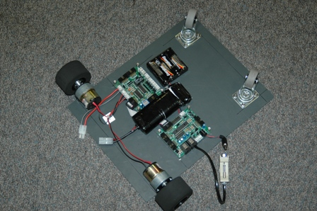
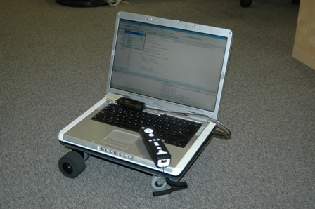

Aprovechando el mal tiempo que acompaña estos días, pero que nos viene de maravilla, he construído el FlatBot. Se trata de una especie de Skybot (lleva las misma electrónica), pero con una base plana y grande para poder poner un portátil encima.

El portátil se comunica con la Skypic para controlar los motores, y nosotros a su vez, podemos conectarnos el portátil mediante Bluetooth o WiFi. De esa forma tenemos una plataforma móvil controlada por nuestro PC y siendo muy fácil la programación de algoritmos complejos.

Otra aplicación de moda e interesante es controlar el robot con el mando de la Wii como se ve en este video. El cámara es tan friki que lo ha grabado girado, mañana os subo uno mejor.

Andrés
jajajaja!!!
Coooomo mola!
El vídeo es surrealista. Sólo le falta la música de Benny Hill. El robot moviéndose a toda leche y Andrés detrás jajajajaj
Es un expediente X, el video lo grabamos con móvil y al subirlo a Youtube se quedó a cámara rápida 😉